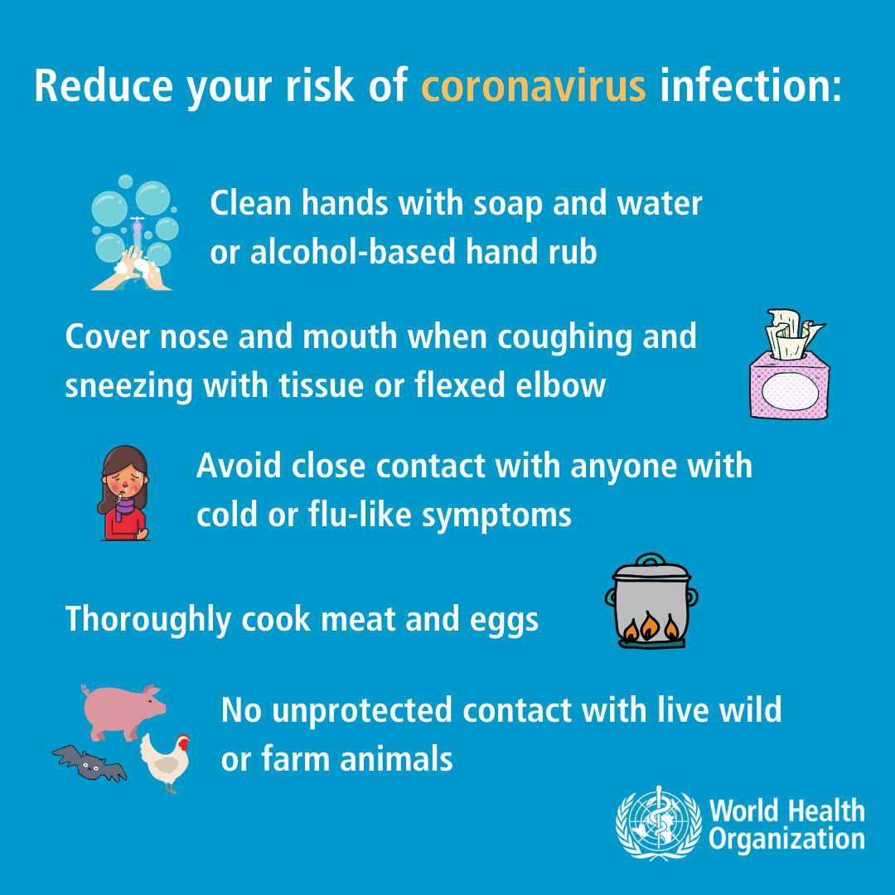

PREVENTION
PREVENTION

|  |
How to keep yourself and others safe:
Wash your hands with soap regularly
Use hand sanitizer or disinfectant spray if the soap is not available
Wear a mask
Avoid touching your face(eyes, nose, mouth) with unwashed hands
Social distancing(6 feet, or 1.8m in indoors, and 1 meter in outdoors)
Avoid contact with people that are sick
Seek for medical care when you find yourself with symptoms
Symptoms ◀ Preventions ▶ Places
 ,
,